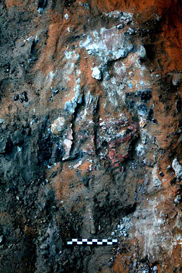
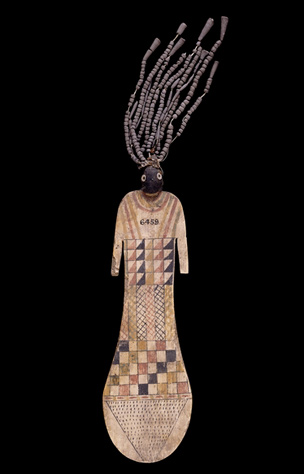
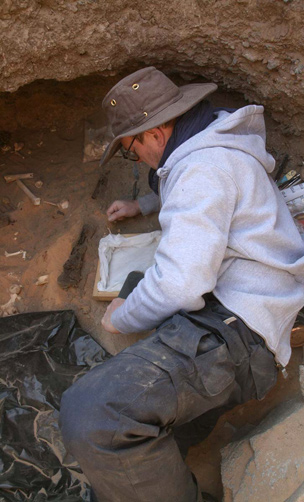

Thu, 01 Mar 2012 12:21:44 +0000
Catching up with progress in the Money Gallery
Catching up with progress in the Money Gallery
Catherine Eagleton, curator, British Museum It’s now a couple of months since the last blog post – so much has been going on that we haven’t had time to write anything about it all. Sometimes, when I talk to friends outside the museum sector, they are surprised at how long major exhibition or gallery projects [...]
Catherine Eagleton, curator, British Museum
It’s now a couple of months since the last blog post – so much has been going on that we haven’t had time to write anything about it all. Sometimes, when I talk to friends outside the museum sector, they are surprised at how long major exhibition or gallery projects seem to take, but when you’re working on one of these projects, you see the number and range of things that there are to do.
At the moment, there is hoarding up in what will become The Citi Money Gallery, and behind there, the cases have all been emptied, and the walls and ceiling have been repainted. Next, there’s work to do on cabling and other basic infrastructure, before we start to install the new displays. Before the scaffolding came down, I made sure I went up to the top, touched the ceiling, and took this picture.

The view above the hoardings
At the same time, the final work is being done on the design of the gallery, including the layout of objects in the cases, and the text that will go with them. With so many specialist curators involved, each piece of text has to be edited, and checked, and re-checked, to make sure we have every detail right. Then, the text and images all go to our graphic designer to create the panels and labels for the new displays. As I write, we are expecting the first proofs of the panels to arrive, which means that it starts to feel like the new gallery is nearly ready to be installed.
The objects aren’t being neglected either, and the team of Museum Assistants in the Department of Coins and Medals are busy checking all the object lists, and getting all the objects ready for display. This preparation involves every object being individually checked by one of the Museum’s conservation team to make sure it’s in good enough condition to go on permanent display, as well as so they can advise on how objects are mounted. With more than 1000 to check, this is a big job.
It’s amazing sometimes what a gallery curator gets involved with – from paint colour choices to deep discussions about how to ensure consistency in our use of ancient place names, and from climbing scaffolding to talking about whether a plastic object would deteriorate if it was on display for five years. I’ll be talking more about this to the next generation of museum curators at a Museum Studies day in March, which I’m very excited about.
The Money Gallery project is supported by Citi and opens in June 2012.

Mon, 20 Feb 2012 18:30:43 +0000
Amara West 2012: the end of work on site
Amara West 2012: the end of work on site
Neal Spencer, British Museum Work on site finished yesterday, with final recording, photography and then the logistics of getting all our equipment back by boat to the expedition house after sunset. Some of our workmen, experienced in building mudbrick architecture on Ernetta island, constructed new walls along the ancient walls of house E13.7, to preserve [...]
Neal Spencer, British Museum
Work on site finished yesterday, with final recording, photography and then the logistics of getting all our equipment back by boat to the expedition house after sunset.

A last sunset over the ancient town
Some of our workmen, experienced in building mudbrick architecture on Ernetta island, constructed new walls along the ancient walls of house E13.7, to preserve the painted plaster surface from wind erosion over the coming months.

Ghazafi Mohamed and Hassan Nouri constructing protective walls in house E13.7
In the next few days we’ll be closing the house, moving objects to the Sudan National Museum in Khartoum and starting our journeys home….
Leave a comment or tweet using #amarawest
Find out more about the Amara West research project

Thu, 16 Feb 2012 15:53:14 +0000
Amara West 2012: coffin mask emerges from a pyramid tomb
Amara West 2012: coffin mask emerges from a pyramid tomb
Michaela Binder, Durham University There is a general rule in archaeology, the most important finds always come at the very end of the season… and why should it be any different at Amara West? In the western chamber of pyramid tomb G309, Åshild Vågene has started to reveal a Ramesside coffin made of wood and [...]
Michaela Binder, Durham University

Painted plaster mask on a coffin lid, as revealed in G309.
There is a general rule in archaeology, the most important finds always come at the very end of the season… and why should it be any different at Amara West?
In the western chamber of pyramid tomb G309, Åshild Vågene has started to reveal a Ramesside coffin made of wood and decorated with painted plaster.
So far, we have exposed most of the red-painted face of a coffin mask, shown with large yellow earrings and a black wig.
Leave a comment or tweet using #amarawest
Find out more about the Amara West research project

Tue, 14 Feb 2012 17:37:44 +0000
Amara West 2012: fertility figurines discovered
Amara West 2012: fertility figurines discovered
Hélène Virenque, Egyptologist Mary Shepperson and I found three small clay figurines in house E13.6, some of the few anthropomorphic representations found at Amara West. Although incomplete, the three figurines have the same rectangular shape and a fine polished surface. They each depict a naked woman, in a very schematic form, with only the breasts [...]
Hélène Virenque, Egyptologist
Mary Shepperson and I found three small clay figurines in house E13.6, some of the few anthropomorphic representations found at Amara West.
")
Clay female figurines from house E13.6 (left-right F6018, F5998, F5996)
Although incomplete, the three figurines have the same rectangular shape and a fine polished surface. They each depict a naked woman, in a very schematic form, with only the breasts and a pubic triangle shown in detail. The breasts are usually added as separate pieces of clay, and thus easily break off, as with two of our examples. The pubic triangle was marked with a series of small holes. None feature legs or arms.

Wooden figurine of a woman with clay hair, from Thebes about 1750 BC. British Museum collection
Such representations are well known in ancient Egypt, especially from the Middle Kingdom onwards. By emphasing the genitalia, they evoke the woman as a source of fertility and thus could be associated with the cult of the goddess Hathor.
Some similar statuettes were found in Upper Egypt, placed in the temple of Deir el-Bahri during the New Kingdom. Other more elaborate types of fertility figurine, in painted wood, are known from late Middle Kingdom tombs.
Leave a comment or tweet using #amarawest
Find out more about the Amara West research project

Mon, 13 Feb 2012 15:55:08 +0000
Amara West 2012: preserving ancient basketry, textiles and wood
Amara West 2012: preserving ancient basketry, textiles and wood
Philip Kevin, British Museum Many objects discovered in the cemetery at Amara West require conservation to even allow them to be lifted, as they cannot support their own weight without consolidation. This is particularly true with organic material, which tends to be poorly preserved in the burial conditions here. In addition to natural degradation through [...]
Philip Kevin, British Museum
Many objects discovered in the cemetery at Amara West require conservation to even allow them to be lifted, as they cannot support their own weight without consolidation.
This is particularly true with organic material, which tends to be poorly preserved in the burial conditions here. In addition to natural degradation through desiccation and the effects of termites, disturbance by looters (ancient and modern) has left objects in a very fragile condition.

Tools of the trade: consolidating fragile organic remains
The roofs of the burial chambers were often collapsed as looters entered to gain access to grave contents. The resulting fall of sharp schist gravel ripped through and crushed much of what lay below, including the coffin found in grave G309. Careful excavations by Åshild Vågene revealed traces of wood and plaster.

Tight working conditions: preparing to lift the bed in G314
These coffins are constructed from wood onto which a thin layer of plaster is applied to all surfaces; this is then painted, and in some cases varnished with a plant resin. Our two coffin fragments (of 20cm by 10cm) had only tiny traces of the internal plaster remaining, but pieces of crumbly wood were still in place. The outer plaster skin has survived in better condition, and is painted.
In order to impart some strength to allow the pieces to be lifted, I started by strengthening the wood and plaster with a mixture of solvent and a synthetic adhesive. It was impossible to remove the fine sand and soil without losing original wood and plaster; even using a small blower would cause some plaster to disappear in a cloud of white dust.
Having consolidated the wood and plaster, an additional support was attached to the back (inside of the coffin) and the fragments were then lifted and returned to the expedition house where they await further treatment.
In another grave being excavated by Laurel Engbring and Michaela Binder, fragments of a Nubian-style funerary bed and a basket were revealed, and I treated them in a similar manner before lifting. A fragment of textile (approximately 10cm2) was also conserved in this grave, offering a rare chance to study the weaving technique used.
This is my first time in Sudan, and it has been fantastic – except when I missed my step clambering out of the boat in the 6.30am darkness, and ended up in the Nile.
Leave a comment or tweet using #amarawest
Find out more about the Amara West research project